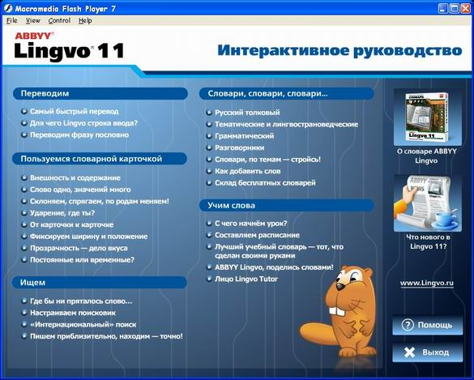

Бобёр Lingvo
Начиная с версии 11, действующим персонажем программного интерфейса и справочных руководств Lingvo становится мультипликационный бобёр. На вопросы интересующихся личностью нового героя ведущие блога команды ABBYY отвечают, что это не простой бобёр, а Бобёр Lingvo.
История появления Бобра с большой буквы восходит к 2004 году и связана с рекламной кампанией Lingvo 10, обратившейся к публике с социально ответственным лозунгом: «Купи Lingvo — спаси бобра» (антитезис к «Убей бобра — спаси дерево»). У идеи экологические мотивы: для производства бумажных словарей нужен лес, а для производства электронных — не нужен. Покупая Lingvo, ты спасаешь и деревья, и бобров, которые их грызут. На промо-сайте красовались ссылки «Спасти бобра», т.е. купить неполную версию, и «Спасти семью бобров», т.е. купить самую полную версию. Рекламная кампания оказалась настолько удачной, что Бобёр остался в ABBYY и со временем стал символом Lingvo.

В Lingvo 11 Бобёр возглавил интерфейсы Интерактивного руководства и вспомогательной программы для заучивания слов Lingvo Tutor. Анимированный персонаж активно общался с пользователями в обоих приложениях: в 1м следил глазами за курсором, шлёпал хвостом и давал советы, а во 2м радовался, когда отвечали правильно, и печалился, когда ошибались.


Кроме того, в комплекте поставки программы к DVD с дистрибутивом прилагалось любопытное приспособление под названием «Многофункциональный коммуникатор Бобер-11»:

Это был простой пластиковый зажим для записок, прикрепляемый с помощью клеевого слоя на угол монитора. Однако внимание привлекал не столько сам «коммуникатор», сколько сопровождающая его инструкция. Представление о её содержании можно получить из нескольких сохранившихся цитат:
- Совместимое с бобром оборудование.
- Не читая предупреждение, вы всё равно даёте согласие, но неосознанное. То есть как бы понарошку.
- Внимание! Настоящий бобёр не является игрушкой для детей до трёх лет — он тяжёлый, мокрый и кусается! Дорогие дети до трёх лет, используйте для игр только ненастоящего бобра.
- В процессе разработки, отладки, производства и тестирования коммуникатора ни один настоящий бобёр не пострадал.
- Удерживая бобра двумя руками поднимите его на уровень глаз. Рассмотрите. Улыбнитесь. Если не смешно, разверните клеевой поверхностью от себя.
- Если во время сеанса бобёр вам подмигнёт, значит, вы заработались, пора домой. Если вы уже дома — вы засиделись, пора на работу.
- Тренировка глазных мышц. Пять секунд смотрите в глаза бобру, затем переведите взгляд на какой-либо отдалённый предмет (зарплата, отпуск).
В Lingvo Tutor 12 Бобёр переквалифицировался в учителя и обзавёлся указкой:

Начиная с Lingvo x3 (14) Бобёр поселился в справочном руководстве, где с каждой новой версией графически эволюционировал:

В специальном выпуске Lingvo x3 Medved Edition Бобёр предстал в новом амплуа, которое, видимо, настолько полюбилось команде разработчиков, что было избрано формой для бобровой реинкарнации всего коллектива:

Такова краткая, но занимательная история мультипликационного персонажа, облюбовавшего словарные полки и завоевавшего признание их обладателей.
Вместо эпилога приведём полный текст сохранившейся инструкции к бобру-коммуникатору в несколько иной от процитированной выше интерпретации:
- Multifunctional Beaver. User Manual.
- 1.1. Читая настоящее предупреждение, вы тем самым даёте осознанное согласие на полное и окончательное присвоение Бобра, включая право использовать его по своему усмотрению, продавать, дарить, оставлять в залог, сдавать в аренду и передавать по наследству. Не читая предупреждение, вы все равно даёте согласие, но неосознанное. Т.е. как бы понарошку.
- 1.2. Бобёр не является игрушкой — он тяжелый, мокрый и кусается! Используйте для игр только ненастоящего Бобра.
- 1.3. В процессе разработки, отладки, производства и тестирования Бобра ни один Бобр не пострадал. На озоновый слой Бобр не воздействует. Противное утверждение ложно.
- 1.4. Содержите Бобра в чистоте, порядке и хорошем настроении.
- 2.1. Удалите защитный слой.
- 2.2. Удерживая Бобра двумя руками, поднимите его на уровень глаз. Рассмотрите. Улыбнитесь. Если не смешно, разверните backside'ом от себя. Выровняйте Бобра в горизонтальной и вертикальной областях.
- 2.3. Прислоните Бобра к корпусу. Прижмите. Подержите три секунды. Отпустите.
- Поздравляем! Бобр Ваш!
- Бобр — прекрасный рекламный носитель. Теперь у вас есть отличная возможность дополнительного заработка. Просто разместите на нем чью-нибудь рекламу!
- 3.1. Бобр обеспечивает надежную защиту. Пока Бобр рядом — они на вас не нападут!
- 3.2. Поговорите с Бобром-психотерапевтом, расскажите ему о своих страхах и чаяньях. Бобр гарантирует конфиденциальность полученной информации и обязуется не передавать ее третьим лицам. Если во время сеанса Бобр вам подмигнет, значит пора.
- 3.3. Диагностика простудных заболеваний. Нанесите несколько капель духов или ароматического масла на бумажку и закрепите ее на Бобре. Как только заметите, что перестали различать запах — обратитесь к врачу! Или обновите бумажку.
- 3.4. Каждый день выполняйте следующее упражнение: смотрите в глаза Бобру, затем переведите взгляд на какой-либо отдаленный невидимый объект. При ежедневном повторении гарантирован положительный эффект.
- 4.1. Здоровый, активный образ жизни не мыслим без Бобра. С его помощью вы без труда сможете организовать ассамблею даже в офисе.
- 4.2. Присутствие Бобра — верный признак единомышленника!
- 4.3. Доверьтесь Бобру! Можете оставить ему записку.
- 5.1. Установите на видном месте фотографию, набросок или дружеский шарж на Бобра. Бобру все равно, а вам приятно!
- 6.1. Исправный Бобр начинает работать сразу и в настройке не нуждается. Если через некоторое время вам кажется, что он смотрит на вас с неудовольствием, протрите его мягкой тряпочкой или салфеткой.
По материалам: История Бобра в блоге команды ABBYY Lingvo; воспоминания обладателей бобра-коммуникатора: c-piper и olly-good.